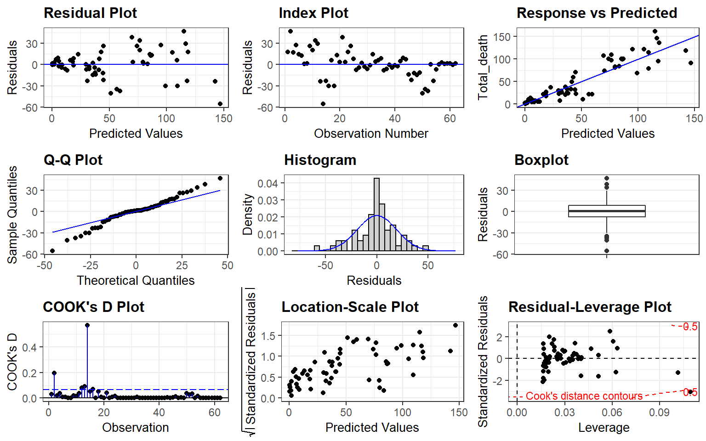

Causes of Road Fatalities
ETC5513-ASSIGNMENT4
TEAM_9
2021-05-31
1 Introduction
Road traffic accidents are a serious safety problem faced by all countries. Road traffic accidents are also the main cause of injuries and deaths, and are the tenth leading cause of all deaths in the world.
The causes of road traffic accidents are complex, involving factors such as people, vehicles, and roads. People are the most active factor affecting traffic safety. Because vehicles are driven by people, and roads are used by people. At the same time, according to the World Health Organization, road traffic injuries have become the main cause of death among young people. This shows the seriousness of the impact of road traffic on personal safety.
Our dataset comes from Data Gov Au which is the central source of Australian open government data. Our team selected several different data sets from government data to conduct research and analysis on road deaths in Australia with human factors. The main content includes changes in the trend of road deaths caused by festivals, and road safety issues under the influence of alcohol as any psychoactive substance and any drug.
These are the research questions we analysis:
Finding the trend of road fatalities in Australia and the comparison of fatalities on special holidays
What is the trend of drug tests conducted from 2010 to 2018 and which state has the maximum number of road fatalities due to drug consumption?
What is the trend of positive RBT conducted from 2008 to 2019 and the relationship between positive RBT and number of death?
2 Finding the trend of road fatalities in Australia and the comparison of fatalities on special holidays (Yalong Liu)
2.1 Trend
Figure 2.1: Trend of road fatalities
Findings in Figure 2.1:
New South Wales has always been the state with the highest number of road deaths.
The reason of two sharp drops in the number of fatalities in New South Wales and Victoria from 1989 to 1992 is two states successively promulgated regulations on blood alcohol concentration of 0.05.
States in remote areas have far fewer fatalities than states with large concentrations of cities.
2.2 Crashes & Fatalities
Figure 2.2: Crashes and fatalities
Findings in Figure 2.2:
There is no significant difference between the number of crashes and fatalities.
More practical cases are that one collision only results in one death.
2.3 Road fatalities in 2020
| Jurisdiction | Christmas | Easter |
|---|---|---|
| New South Wales | 7 | 3 |
| Victoria | 7 | 0 |
| Queensland | 9 | 2 |
| South Australia | 4 | 1 |
| Western Australia | 1 | 1 |
| Tasmania | 1 | 0 |
| Northern Territory | 1 | 0 |
| Australian Capital Territory | 0 | 0 |
Findings in Table 2.1:
Queensland has the highest number of road deaths in 2020 at 9.
There are very few deaths in the remote states.
In the states with more main cities, the number of deaths during the 12-day Christmas holiday is more than double the number during the 5-day Easter holiday.
2.4 Festivals & Ordinary days
Figure 2.3: Festivals and weekdays
Findings in Figure 2.3:
Holiday deaths are not entirely higher than weekday deaths.
The number of deaths on special festivals in more years is greater than usual.
The maximum number of deaths in a single day will not exceed 4.
The number of road deaths on Christmas and Easter in 2020 is significantly lower than in 2019.
3 What is the trend of drug tests conducted from 2010 to 2018 and which state has the maximum number of road fatalities due to drug consumption? (Arpan Sarkar)
3.1 Drug Test Results Trend
Figure 3.1: Graph1
Above Figure 3.1 drawn with year wise data of drug testing and positive cases. The diagram is drawn with data of all states combined. The following observations worth noticing.
Number of tests started declining from 33000 in 2010 to 20000 in 2012. For two more years, the level of tests maintained as about 20000 tests / year.
From 2014 number of tests was increased gradually and in 2018 reached the level of 50000 / year.
The positive cases fond to be minimal till 2014. Thereafter it gradually started rising almost in the same proportion to that of the tests undertaken and reached about 6300 / year in 2018.
3.2 Positive Results And Deaths In Australia
Figure 3.2: Graph2
Interpretation of above graph 3.2
Australian Capital Territory has minimum (only a few) drug-positive cases over the years although it shows a little rising after 2014 till 2018. It maintained single digit death count all along from 2014 to 2018 and in line with it low positive drug cases.
Tasmania recorded another low (but higher than ACT) in drug positive count since 2007 to 2012 and thereafter rose to as high as 2200 in 2015 and maintained almost same rate till 2018. Death cases fell from 19 in 2007 to about 4 in 2012, then rose to 8 in 2014 but fell sharply to zero in 2015 and then rose to 10 in 2016 and fell to single digit in 2018.
SA positive cases rose almost diagonally till 600 to 5000+ and then it decreased to about 4300 in 2016 and then again rose to 5000+ in 2018. SA has shown the death count as between 10 to 21 through out with a rise-fall-rise-fall pattern all along.
NSW maintained almost similar pattern as lie TAS from 2010 to 2012 and then started rising and reached the peak with 9123 cases in 2015. Positive cases got reduced for 2016 but rose to the high value of 9273 in next year i.e., 2017. The state recorded maximum death count. From 53 in 2010 to 42 in 2011 to 52 in 2013 to suddenly rose to above 80 in 2016, but by 2018 the figure is reduced to 70.
QLD showing very exceptional result. From almost zero in 2009, it rose gradually to 2014 and then started rising very sharply to just below 15000 in 2018. The lowest (almost zero all along) death cases recorded by the state is a great achievement by the state despite having the highest drug-positive cases.
3.3 Relationship Of Deaths And Positive Drug Test
Fitted a local regression model to check the relationship between deaths and positive drug tests.
We can see there is a lot of variation in the line, and thus explains there is no linear relationship between DEATHS and POSITIVE DRUG TESTS.
3.4 Consolidated data of number of tests, positive cases and average death cases for getting a view of overall status.
| state | year | avg_road_side_drug_test | avg_positive_drug_test | avg_deaths |
|---|---|---|---|---|
| NSW | 2016 | 89101 | 8220 | 83 |
| NSW | 2017 | 111176 | 9273 | 81 |
| NSW | 2015 | 62247 | 9123 | 75 |
| NSW | 2018 | 115874 | 9067 | 69 |
| NSW | 2010 | 32455 | 735 | 53 |
| NSW | 2013 | 34280 | 898 | 52 |
| NSW | 2014 | 38830 | 2096 | 50 |
| NSW | 2012 | 31446 | 705 | 48 |
| NSW | 2011 | 33528 | 666 | 42 |
| SA | 2017 | 49626 | 4337 | 22 |
| SA | 2009 | 43681 | 1179 | 20 |
| SA | 2016 | 48690 | 4310 | 20 |
| SA | 2018 | 51382 | 5141 | 18 |
| SA | 2014 | 49777 | 4681 | 17 |
| Tas | 2008 | 412 | 211 | 17 |
| SA | 2010 | 45124 | 1699 | 16 |
| SA | 2015 | 53691 | 5239 | 16 |
| SA | 2011 | 44178 | 2320 | 14 |
| SA | 2012 | 43569 | 3237 | 14 |
| SA | 2008 | 25903 | 600 | 11 |
| Tas | 2016 | 3722 | 2154 | 11 |
| SA | 2013 | 51179 | 3737 | 10 |
| Tas | 2014 | 3431 | 1969 | 8 |
| Tas | 2018 | 4005 | 2408 | 7 |
| Tas | 2017 | 3730 | 2152 | 6 |
| ACT | 2015 | 2090 | 258 | 4 |
| Qld | 2017 | 62098 | 11697 | 4 |
| Tas | 2011 | 1678 | 573 | 4 |
| Tas | 2013 | 1819 | 639 | 4 |
| ACT | 2013 | 2429 | 116 | 3 |
| Tas | 2012 | 1698 | 523 | 3 |
| ACT | 2014 | 2520 | 392 | 2 |
| ACT | 2016 | 2721 | 444 | 2 |
| ACT | 2018 | 3328 | 877 | 2 |
| ACT | 2012 | 1733 | 37 | 1 |
| Qld | 2018 | 67784 | 13975 | 1 |
| Tas | 2015 | 3738 | 2318 | 1 |
| ACT | 2017 | 2919 | 504 | 0 |
| Qld | 2008 | 10747 | 216 | 0 |
| Qld | 2009 | 12489 | 254 | 0 |
| Qld | 2010 | 21655 | 440 | 0 |
| Qld | 2011 | 25172 | 825 | 0 |
| Qld | 2012 | 19686 | 937 | 0 |
| Qld | 2013 | 20787 | 1300 | 0 |
| Qld | 2014 | 21225 | 2208 | 0 |
| Qld | 2015 | 39950 | 7446 | 0 |
| Qld | 2016 | 50812 | 10663 | 0 |
| r.squared | adj.r.squared | AIC | BIC | deviance |
|---|---|---|---|---|
| 0.1126226 | 0.0929031 | 429.8756 | 435.426 | 22717.69 |
R-square value tells us how much accurate our model is 3.2.
0.11 R-square means that the model explains only 11% of variation within the data.
It indicates that our independent variable is not explaining much in the variation of our dependent variable, regardless of the variable significance.
4 What is the trend of positive RBT conducted from 2008 to 2019 and the relationship between positive RBT and number of death? (Xinyi Cui)
4.1 RBT results for each state
Figure 4.1: Positive RBT in Australia
The graph 4.1 presents the positive random breath test (RBT) test result from 2008 to 2019 for each state and territory in Australia.
The highest positive RBT result was in 2010 Queensland of 33638 positive results.
Queensland and New South Wales are the two states having the highest number of positive RBT.
In general, there is a decreasing trend for positive RBT over the years for all states and territories
Tasmania and Australian Capital Territory remained low positive RBT from 2008 to 2019.
4.2 RBT ratio for each state
Figure 4.2: RBT ratio
The graph 4.2 illustrates the positive RBT ratio for each state and territory in Australia from 2008 to 2019. RBT ratio is calculated by the number of positive RBT divided by the total number of RBT conducted.
Queensland is no longer the highest in this figure while the Northern Territory have the highest positive RBT ratio for the past 13 years.
All other states and territories have a RBT ratio below 1.5 from 2015, whereas NT stayed 7.8 for 2015.
West Australia used to have the second highest RBT ratio in 2008, and it was the second lowest RBT ratio is 2019, it experienced a great improve.
A report released by the Menzies school of research stated that Northern Territory have the highest rates of alcohol consumption per capita in Australia
4.3 Regression model
Find the relationship between positive RBT and number of death. THen fit a linear model to the number of death and positive RBT,
- There is a positive linear relationship that higher the positive RBT higher the number of total death (deaths with a BAC above legal limit).
4.4 Model fitness
| r.squared | adj.r.squared | sigma | statistic | p.value | df | logLik | AIC | BIC | deviance | df.residual | nobs |
|---|---|---|---|---|---|---|---|---|---|---|---|
| 0.8178399 | 0.8148039 | 19.35041 | 269.3806 | 0 | 1 | -270.646 | 547.2919 | 553.6733 | 22466.31 | 60 | 62 |
The table is the measures of fit of the model.
R.squared is 0.818 which is close to 1.
Adjusted R.squared is 0.815 which is close to 1.
Relative low AIC and BIC
4.5 Residual panel

Residual plot shows the fluctuation of residuals are big as the dots of residuals are not around 0
Q-Q plots shows the sample and theoretical quantiles not matched with each other, indicating they are not normal distribution.
Histogram and boxplots show there are many outliers in the residuals and the residuals are not normally distributed.
In conclusion, it is a moderate model according to the diagnostic plots and the fitness of the model. As there is only one dependent variable (postive RBT) in the model which is not enough to explain the independent variable (Number of road death).
5 Conclusion
Drug use is increasingly associated with road accidents. While alcohol and illicit substances dominate, a number of prescription drugs contribute to injury and death. Most drugs do not significantly increase the risks of accidents if they are taken as prescribed, however a number of commonly used drugs can impair the ability to drive safely. Awareness that some drugs affect driving will help to reduce their potential impact on road safety.
Alcohol continues to be the most prevalent drug causing road trauma. In Australia, its prevalence in road fatalities is 25-30% depending on the jurisdiction. The average blood alcohol concentration in fatal accidents is over 0.15%.
Christmas time of year is one of the most high risk times on Australia Roads with many people hitting the road to attend Christmas parties, end of year celebrations, and heading towards the coast for a well-deserved break. Driver’s must remember that travelling during holiday periods can be more risky because of increased traffic volumes, congestion, tiredness, people driving in unfamiliar environments, and a higher number of people who are driving under the influence of alcohol.
Unfortunately, road accidents and fatalities over the Christmas period are often significantly worse than the rest of the year.
6 Reference
[1] Chelsea Heaney (2019) Do Darwin residents really drink more than other Australians? from https://www.abc.net.au/news/2019-03-05/curious-darwin-does-darwin-really-the-drink-the-most-alcohol/10867768
[2] C. Sievert. Interactive Web-Based Data Visualization with R, plotly, and shiny. Chapman and Hall/CRC Florida, 2020.
[3] David Robinson, Alex Hayes and Simon Couch (2021). broom: Convert Statistical Objects into Tidy Tibbles. R package version 0.7.5. https://CRAN.R-project.org/package=broom
[4] Hadley Wickham, Romain François, Lionel Henry and Kirill Müller (2021). dplyr: A Grammar of Data Manipulation. R package version 1.0.5. https://CRAN.R-project.org/package=dplyr
[5] Hao Zhu (2021). kableExtra: Construct Complex Table with ‘kable’ and Pipe Syntax. R package version 1.3.4. https://CRAN.R-project.org/package=kableExtra
[6] Katherine Goode and Kathleen Rey (2019). ggResidpanel: Panels and Interactive Versions of Diagnostic Plots using ‘ggplot2’. R package version 0.3.0. https://CRAN.R-project.org/package=ggResidpanel
[7] Lionel Henry and Hadley Wickham (2021). rlang: Functions for Base Types and Core R and ‘Tidyverse’ Features. R package version 0.4.11. https://CRAN.R-project.org/package=rlang
[8] Nicholas Tierney, Di Cook, Miles McBain and Colin Fay (2020). naniar: Data Structures, Summaries, and Visualisations for Missing Data. R package version 0.6.0. https://CRAN.R-project.org/package=naniar
[9] Olaf H Drummer (2008) The role of drugs in road safety. From https://www.nps.org.au/australian-prescriber/articles/the-role-of-drugs-in-road-safety
[10] Richard Iannone, JJ Allaire and Barbara Borges (2020). flexdashboard: R Markdown Format for Flexible Dashboards. R package version 0.5.2. https://CRAN.R-project.org/package=flexdashboard
[11] Roland Krasser (2021). explore: Simplifies Exploratory Data Analysis. R package version 0.7.0. https://CRAN.R-project.org/package=explore
[12] Sam Firke (2021). janitor: Simple Tools for Examining and Cleaning Dirty Data. R package version 2.1.0. https://CRAN.R-project.org/package=janitor
[13] Wickham et al., (2019). Welcome to the tidyverse. Journal of Open Source Software, 4(43), 1686, https://doi.org/10.21105/joss.01686
[14] Yihui Xie (2020). bookdown: Authoring Books and Technical Documents with R Markdown. R package version 0.21.
[15] Yihui Xie (2021). tinytex: Helper Functions to Install and Maintain TeX Live, and Compile LaTeX Documents. R package version 0.31.
7 Data Sources
[1] Bureau of Infrastructure and Transport Research Economics (2021). Australian Easter road deaths. From https://data.gov.au/dataset/ds-dga-75870058-66e5-4115-9ece-80d1e46b39e5/details?q=
[2] Bureau of Infrastructure and Transport Research Economics (2021). Australian Christmas road deaths. From https://data.gov.au/dataset/ds-dga-1a64f7f7-f200-49ca-806c-543c23ae5374/details?q=
[3] Bureau of Infrastructure and Transport Research Economics (2020). Australian Random Breath Test. From https://data.gov.au/dataset/ds-dga-a814a8c5-ef57-463c-9c8b-a6e625bfb860/details?q=
[4] Bureau of Infrastructure and Transport Research Economics (2020). Australian Roadside Drug Testing. From https://data.gov.au/dataset/ds-dga-2b299428-c626-4446-88ef-54930b8a5e9b/details?q=
[5] Bureau of Infrastructure and Transport Research Economics (2020). Australian Road Deaths Database. From https://data.gov.au/dataset/ds-dga-5b530fb8-526e-4fbf-b0f6-aa24e84e4277/details?q=